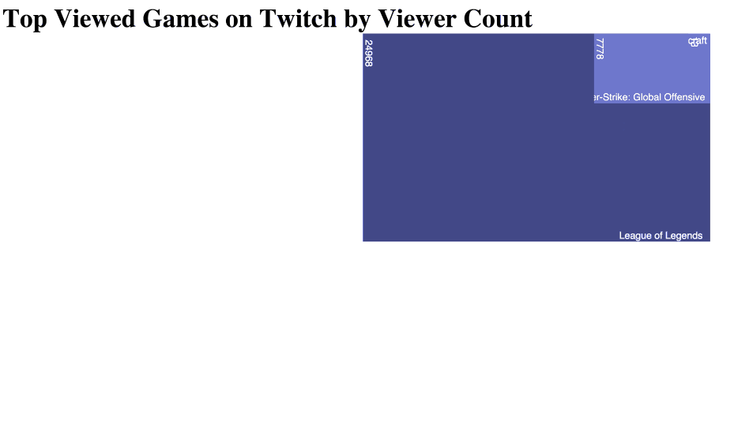

Scaling your D3 Data
Let me preface this post by saying Scott Murray's post on Scaling from his blog, Aligned Left, does the subject a bit more justice than this post. In fact, I used his post to understand scales to finish a D3 project I was working on. That said, if you want a quick explanation using my project as an example, continue reading.
Let's first talk about what scales are.
Scales are functions that map from an input domain to an output range.
Let me repeat that in case you didn't get that. Input Domain to an Output Range. This means that the domain of the dataset you input, will be outputted to a normalized range you specify.

Above, you'll find a D3 project I worked on using data from the Trendy Skills API to graph programming language occurrencies on Trendy Skills (popularity) vs. Average Yearly Salary. We'll be walking through how I scaled the Average Yearly Salary to fit nicely on the y-axis.
The Data
Average Yearly Salary - Raw Data
var avgSalary = [80331.13816332279, 64048.22617049916, 75811.31883208721, 65281.71257122926, 70178.37703874212, 72835.88428124922, 67268.6801932954, 69087.79809839057, 91752.59932125654, 71494.96067160195];
As you can tell from the graph above and the dataset, the average yearly salary for a C developer vs. a PHP developer vs. a JavaScript or Java developer varies greatly. Our goal is to get this wide domain of data within a reasonable range for our svg. Since we plan on fitting this data on the y-axis of our svg, we're only concerned with the height of our svg, which is currently set to 768 pixels.
I'm sure the first thing you'll notice (other than the place value accuracy) is probably the domain we're working with. Using the Math.min() and Math.max(), we can easily grab the domain we'll be working with.
Math.min.apply(null, avgSalary); // 91752.59932125654
Math.max.apply(null, avgSalary); // 64048.22617049916
Now that we have the domain, we can start creating a scale using D3's built in scale methods. Below is the final scaling function.
var yScale = d3.scale.linear()
.domain([60000, 95000])
.range([768, 0]);
We start by telling D3 what kind of scale we want, in this example, linear.
var yScale = d3.scale.linear()
We then chain our function and set the domain.
.domain([60000, 90000])
// .domain() accepts a tuple with a min / max value.
// I rounded $64,048 down to $60,000 and $91,752 up to $95,000,
Finally, we tell D3 the range we want it to create using our domain above. We're essentially telling D3 "take the domain above and graph it using this scale".
.range([768, 0]);
// .range() accepts a tuple with a min, max value.
// One thing you'll notice here is that we seemed to have 'switched' our values.
// i.e. why is it [768, 0] vs. [0, 768]?
The reason why we do this is because we want our data to function like a quadrant 1 graph (x increases as you go 'right' and y increases as you go 'up'). If we used [0, 768], our graph would be inverted (x increases as you go 'right' and y increases as you go 'down').
Because D3's scale functions return a function, we can now invoke this function on our data. Below is the code I used to plot these points.
circles.enter()
.append("circle")
.attr({
"cx": function(d, i){
return xScale(d.countOccurencies);
},
"cy": function(d, i){
return yScale(d.averageSalary); // uses our yScale function
},
"r": 5
})
.attr("fill", "#03aa88");
Although linear scale is the most popular way to scale your data, there are a handful of other scales such as identity, power, logarithmic, quantize, quantile, etc. You can read more about them here. Oh, and don't forget Ordinal Scales and Time Scales!
And last but not least, another D3 project, which queries the Twitch API and graphs current viewers based on game. This project uses D3's power scale.
